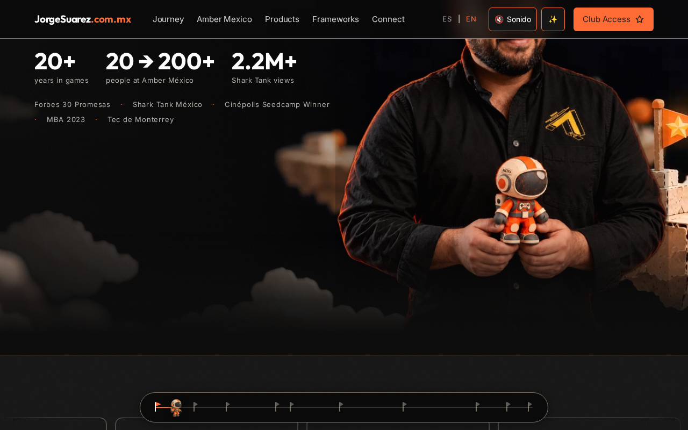

Español | English
jorgesuarez.com.mx
Discover the journey and find the project you care about. Open the site and navigate to the story, projects or contact. No installation is needed.
What is it?
Jorge Suárez's personal site: a presentation of his game industry journey, initiatives, resources and contact routes. It is a public entry point to content and links, not proof that every external service is available.
Who is it for?
People interested in games, entrepreneurship and Jorge's public projects, as well as those looking for a contact route.
Why does it exist?
To bring the story, projects and lessons together. The previous README describes a hub for games, studio building, community, entrepreneurship and AI; no biographies, clients or measured outcomes are added here.
How do I use it?
- Visit the page.
- Use ES / EN to choose a language. Public capture navigation labels include Journey, Amber Mexico, Products, Frameworks and Connect; some labels may remain in English.
- Open Products to explore projects or Connect to find contact. Check the destination's terms before sharing data or paying.
Amber and other companies retain their identity: the builder's personal brand does not replace their brandkits or imply authorship or ownership of their products.
When should or shouldn't I use it?
Use it to discover the journey, explore links and decide what to read next. Do not treat it as a customer dashboard, a contract, a demonstrated learning platform or proof that every initiative is available.
Where can I find it?
Public site · Project profile · Official brandkit.
Before continuing
- Availability: public page checked with HTTP 200 in Chromium on 22 October 2026. This does not prove which repository revision is deployed.
- Requirements and technical help: a modern browser and connection. Reading needs no developer; editing or publishing requires technical review. Universal mobile or GPU performance is not guaranteed.
- Cost and licensing: reading the page requires no payment; linked offers may have their own costs.
package.json declares UNLICENSED; visible code does not grant reuse rights. Brand artwork and photos are not MIT.
- Privacy: reading connects to the site and its resources; external destinations have their own policies. Cookies, storage and all providers have not been audited. The evidence submits no forms or personal information.
- Limitations: public navigation and scrolling were checked, not club access, payments, forms or private systems. Captures document the observed site, not functionality added by this documentation.
- Help: Jorge's public email or repository issues, without secrets or customer data.
Real walkthrough

Video with English captions and transcript · Subtítulos y transcripción ES. Public-page recording, without submissions or account access.
Separate technical path
Repository maintenance notes · Documentation guide · Media notice.
The previous README attributes v2 to a private source repository and mentions GitHub Pages behind Cloudflare, while retaining older Vercel references. The relationship between this checkout, the served build and the current provider has not been verified. Do not treat those notes as deployment or rollback instructions. Historical records remain untouched.